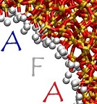

News and Events
News
Board of the French-German Adsorption Initiative
The board of the French-German Adsorption Initiative has now been appointed. It is composed of 3 German and 3 French researchers active in the field of adsorption science and technology (with one Chair from each country). More details can be found in the people page
Event (meeting)
 2022 Annual Meeting of the French Adsorption Society (AFA 2022)
Initially planned in Nancy (France), due to the current COVID situation, this meeting was held as a virtual event on Jan. 27-28 using the software Gathertown. Several colleagues from the German adsorption community were invited - including Dieter Bathen, Andreas Seidel-Morgenstern, Matthias Thommes, and Stefan Kaskel. The link to the final program and the AFA website can be accessed by clicking here
Event (Meeting)
 2021 Dechema Adsorption Meeting (2021)
2021 Dechema Adsorption Meeting (2021)
On the occasion of the annual meeting of the German Adsorption Society (Jahrestreffen der ProcessNet-Fachgruppe Adsorption), several colleagues from the French adsorption community were invited - including Benoit Coasne, Cecile Vallieres and Matthieu Vandamme. The link to the conference and the German Adsorption Society can be accessed by clicking here